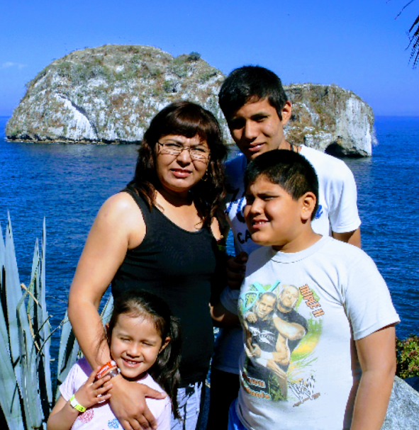

💌 Mi Carta para Mamá
El amor de una madre es el más grande y honesto que pueda haber. Es un amor que no se apaga, que atraviesa los días buenos y malos, y que permanece firme incluso en los momentos más difíciles.
Querida mamá,
No sé exactamente en qué momento empecé a ver el mundo de una forma diferente, tal vez ha sido un proceso lento, casi imperceptible, pero últimamente he comenzado a comprender muchas cosas que antes pasaban desapercibidas para mí. Una de esas cosas es todo lo que has hecho por mí, los sacrificios que quizás nunca mencionas, los desvelos que no se cuentan y las preocupaciones que guardas en silencio.
Siempre supe que eras fuerte, pero hoy entiendo de dónde nace esa fuerza. Nace del amor, de ese amor que no pide nada a cambio y que no descansa, aunque las cosas se pongan difíciles.
Sé que he pasado por momentos oscuros, por días en los que parecía que todo se apagaba, y sin embargo, tú siempre has estado ahí. Nunca me soltaste la mano, incluso cuando yo misma estaba perdida. No sé cómo haces para encontrar siempre las palabras correctas, para levantarme cuando siento que no puedo más. Gracias por tu paciencia, por tu ternura y por no rendirte conmigo.
Eres la razón por la que he podido seguir adelante en los momentos más difíciles. Porque sé que me amas, y ese amor me sostiene incluso cuando siento que todo lo demás se tambalea. Gracias por preocuparte por mí, por asegurarte de que siga caminando, de que no me detenga, de que no me rinda.
Quiero agradecerte por cada esfuerzo, por cada consejo, incluso por aquellos que no entendí en su momento, pero que hoy tienen más sentido que nunca. Agradezco también tus silencios, tus miradas de apoyo y tu forma de estar presente sin necesidad de decir una palabra.
Gracias por ser mi ejemplo, mi refugio y mi fuerza.
Te amo, mamá.
Con todo mi cariño, Jessica.
